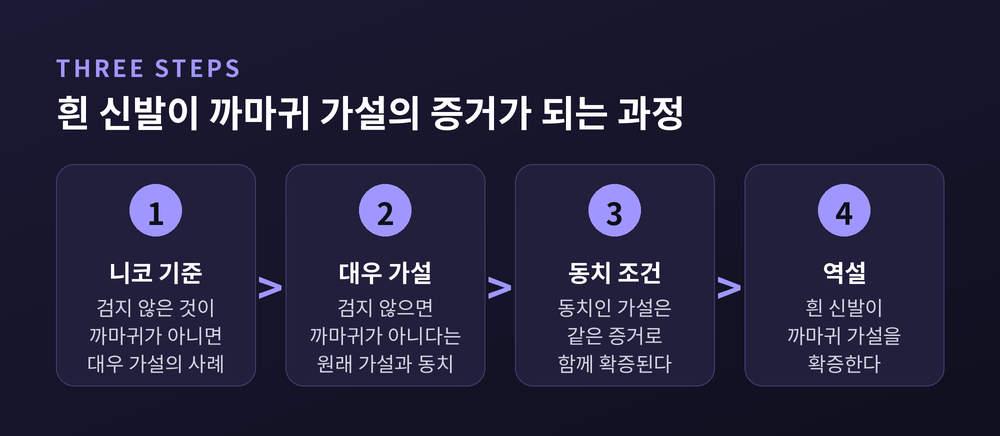
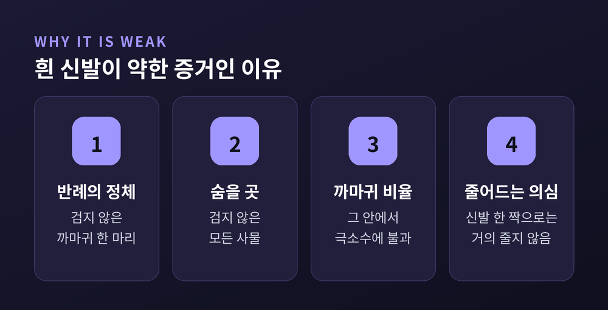

오늘은 헴펠의 까마귀 역설을 이야기해 보려 합니다. 검지 않은 물건을 보는 일이 어떻게 "모든 까마귀는 검다"를 뒷받침하게 되는지, 그리고 확증 이론이 이 문제를 어떻게 다뤄 왔는지를 차례로 짚어보겠습니다.
카를 헴펠은 1937년과 1945년에 이 문제를 제기했습니다. 1945년 논문의 제목이 「확증 논리 연구」입니다.
출발점은 아주 평범합니다. 가설은 "모든 까마귀는 검다"입니다. 검은 까마귀를 한 마리 보면 이 가설이 뒷받침된다고 느낍니다. 자연스러운 직관입니다.
그런데 이 직관에 논리 규칙 하나를 보태면 이상한 결과가 나옵니다. 흰 신발 한 짝이 같은 가설을 뒷받침하게 됩니다.
굿맨은 이 결론을 "실내 조류학의 전망"이라 비꼬았습니다. 밖에 나가 새를 관찰할 필요 없이, 방 안에서 신발장만 뒤져도 조류학을 할 수 있다는 뜻입니다.
역설은 두 원칙에서 나옵니다. 여기에 대우라는 논리 사실이 더해집니다.
첫째는 니코 기준입니다. 장 니코가 1924년에 내세웠습니다. 어떤 사례에 F가 있고 G도 있으면 "F는 G다"라는 법칙에 유리합니다. F인데 G가 없으면 불리합니다. 그리고 F가 아닌 사례는 증거로서 중립입니다. 검은 까마귀는 확증이고, 검지 않은 까마귀는 반증이며, 신발은 아무 상관이 없다는 말입니다.
둘째는 동치 조건입니다. 논리적으로 같은 말을 하는 두 가설은 경험적 내용도 같으니, 한쪽을 확증하는 증거는 다른 쪽도 확증해야 합니다.
셋째는 논리의 사실입니다. "모든 까마귀는 검다"와 "검지 않은 모든 것은 까마귀가 아니다"는 서로 대우 관계라서 동치입니다.
이제 흰 신발을 봅니다. 흰 신발은 검지 않고, 까마귀도 아닙니다. 두 번째 문장의 사례입니다. 니코 기준에 따르면 이 문장이 확증됩니다. 동치 조건에 따르면 첫 번째 문장도 확증됩니다.

표로 정리하면 어디가 어색한지 보입니다. 같은 대상을 두 가설로 읽어 보면 됩니다.
검은 구두는 두 가설 모두에서 중립입니다. 검은 것이므로 대우 가설의 사례가 아니고, 까마귀가 아니므로 원래 가설의 사례도 아닙니다. 그런데 흰 신발은 대우 가설의 사례가 됩니다. 이 비대칭이 문제를 만듭니다.
이제 선택지는 셋입니다. 니코 기준을 버리거나, 동치 조건을 버리거나, 결론을 받아들이거나.
헴펠이 고른 것은 마지막이었습니다. 그는 자신의 원칙에서 나온 귀결이 "심리적으로 아무리 놀랍더라도 논리적으로는 흠이 없다"고 했습니다. 우리가 이상하게 느끼는 이유는, 검지 않은 것이 까마귀보다 훨씬 많다고 암묵적으로 가정하기 때문이라고 보았습니다. 다만 그의 확증 이론은 배경지식을 전혀 전제하지 않는 이론이었습니다.
이 답은 반쯤만 설득력이 있습니다. 놀라움이 심리의 문제일 수 있다는 점은 일리가 있습니다. 하지만 심리가 문제라면, 그 심리가 무엇을 근거로 하는지 설명하는 이론이 있어야 합니다. 헴펠의 이론에는 그 자리가 없었습니다. 스탠퍼드 철학백과도 이 이론이 너무 관대해서 직관적으로 부당한 확증까지 허용한다고 평가합니다.
이 자리를 채운 것이 확률 이론입니다. 베이즈적 관점에서 확증이란 증거가 가설의 확률을 높이는 일입니다. 그리고 확률은 우리가 이미 아는 것, 곧 배경지식 위에서 계산됩니다.
폴란드의 논리학자 야니나 호시아손-린덴바움이 1940년 논문 「확증에 관하여」에서 이 역설을 처음 인쇄물로 다루며 확률적 해결을 내놓았습니다. 1941년 빌뉴스에서 수감되었다가 1942년경 처형된 것으로 추정되는 인물입니다. 이후 I. J. 굿이 1960년에 핵심을 짚었습니다. 흰 신발이 주는 증거의 무게는 양(+)이지만, 까마귀가 검지 않은 사물에 비해 아주 적다고 알려져 있다면 그 무게는 작다는 것입니다.
헴펠의 놀라움에 대한 해명이 여기서 나옵니다. 흰 신발은 증거가 아닌 것이 아닙니다. 증거이되, 사실상 무시해도 될 만큼 약합니다.
쉽게 풀면 이렇습니다. 가설이 틀렸다면 반례는 검지 않은 까마귀입니다. 이 반례가 숨어 있을 곳은 검지 않은 사물 전체입니다. 그런데 그 안에서 까마귀는 극소수입니다. 신발 한 짝을 확인해서 줄어드는 의심은 아주 작습니다. 반면 까마귀를 한 마리 집어 색을 확인하면 의심의 후보 자체가 직접 줄어듭니다.

피텔슨과 호손의 분석은 이를 독립성 같은 강한 가정 없이 조건으로 정리합니다. 검지 않은 사물이 까마귀보다 압도적으로 많은 현실적 상황에서는, 검은 까마귀가 검지 않은 비-까마귀보다 훨씬 강하게 확증한다는 결론이 나옵니다. 논문은 검지 않은 것이 까마귀의 약 10억 배라는 규모를 가정한 예를 듭니다.
역설은 풀리지 않고 크기가 조정된 셈입니다. 헴펠의 "확증한다"는 틀리지 않았습니다. 틀린 것은 "확증한다면 같은 정도로 확증한다"는 암묵적 기대였습니다.
더 놀라운 대목이 있습니다. 굿은 1967년에 니코 기준 자체가 흔들리는 반례를 내놓았습니다.
두 가지 세계를 상상해 보십시오. 세계 H에는 검은 까마귀 100마리, 검지 않은 까마귀 0마리, 그 밖의 새 100만 마리가 있습니다. 세계 ¬H에는 검은 까마귀 1,000마리, 흰 까마귀 1마리, 그 밖의 새 100만 마리가 있습니다. 앞은 "모든 까마귀는 검다"가 참인 세계이고, 뒤는 거짓인 세계입니다.
새 한 마리를 무작위로 골랐더니 검은 까마귀였습니다. 어느 세계에서 이런 일이 더 잘 일어날까요. 앞 세계에서는 100/1,001,000이고, 뒤 세계에서는 1,000/1,001,000입니다. 뒤 세계 쪽이 열 배 높습니다.
그러면 검은 까마귀를 본 것이 가설이 거짓인 세계를 더 개연적으로 만듭니다. 검은 까마귀가 가설을 약화시킨 것입니다.
이 예가 가르치는 바는 분명합니다. 증거가 가설을 확증하는지는 증거의 문장 모양만으로 정해지지 않습니다. 표본이 어떤 세계에서 어떻게 뽑혔는지, 곧 배경지식에 달려 있습니다. 니코 기준은 "대체로" 통하는 어림법이지, 논리 법칙이 아닙니다.
베이즈 해결이 모든 것을 정리한 것은 아닙니다. 지금도 논쟁이 이어집니다.
표준 해결은 몇 가지 독립성 가정에 기댑니다. 피터 브라나스는 그중 하나, 어떤 대상이 검지 않다는 사실이 가설의 확률에 영향을 주지 않는다는 가정이 문헌에서 거의 옹호되지 않았고 비현실적이라고 비판합니다. 이 가정 없이는 표준 해결의 핵심 결론을 지키기 어렵다는 주장입니다.
리나드는 한 걸음 더 나아갑니다. 표준 해결의 두 독립성 가정을 함께 받아들이면 검은 비-까마귀가 가설을 반확증한다는 부조리가 따라옵니다. 그래서 하나를 버리고, 검은 까마귀만 확증하며 흰 신발은 확증도 반증도 아닌 중립이라고 봅니다. 그 비대칭의 근거로 '까마귀'가 '검음'보다 더 자연스러운 종류라는 점을 듭니다.
여기서 헴펠 쪽과 입장이 갈립니다. 헴펠은 흰 신발이 확증이라 했습니다. 표준 베이즈는 확증이되 미미하다고 했습니다. 리나드는 중립이라 했습니다. 콰인은 '검지 않음' 같은 여집합 술어는 귀납에 쓸 수 있는 자연종이 아니라고 보았고, 셰플러와 굿맨은 동치 조건 자체가 확증에서는 성립하지 않는다고 보았습니다.
같은 신발 한 짝을 두고 이만큼 답이 다릅니다. 어느 쪽이 옳은지는 아직 합의되지 않았습니다.
앞서 다룬 굿맨의 그루 역설과 나란히 놓으면 차이가 선명합니다.
까마귀 역설은 증거의 범위가 너무 넓어지는 문제입니다. 관련 없어 보이는 사례까지 확증이 됩니다. 그루 역설은 같은 증거가 양립할 수 없는 가설들을 똑같이 확증하는 문제입니다. 굿맨의 지적대로 순수하게 문장의 형식에만 기대는 확증 이론으로는 두 문제를 모두 풀 수 없습니다.
베이즈 쪽은 사전확률로 대응할 수 있다고 하지만, 왜 그 사전확률이어야 하느냐는 물음은 남습니다. 자연종이나 투사 가능성 같은 개념 없이는 해결이 어렵다는 점은 두 역설이 공유하는 지점입니다.
끝으로 한 마디만 덧붙이겠습니다.
헴펠이 보여준 것은 어이없는 결론이 아니라 확증이라는 개념의 숨은 구조였습니다. 증거는 문장 하나로 홀로 서 있지 않습니다. 무엇을 이미 알고 있는지, 어떻게 그 증거를 얻었는지가 함께 들어옵니다.
"증거의 힘은 증거 하나가 아니라, 그 증거가 놓인 배경에서 나온다."
다음에 누군가 흰 신발을 증거라고 내민다면 웃어넘기기 전에 물어보시길 권합니다. 그 신발은 얼마나 강한 증거입니까.